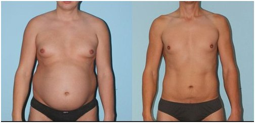

Departamento de Salud: producto innovador para bajar de peso. Pierda hasta 15 kilos en 4 semanas sin productos químicos, hambre ni ejercicios.

Experto en Salud, Certificado por la Junta, Juan Mendoza
Las dietas, los ejercicios y hasta la liposucción son actualmente los principales métodos
utilizados para combatir el sobrepeso. Sin embargo, considerando el hecho de que el número
de gente obesa continúa aumentando, ninguno de los métodos anteriores puede llamarse popular
y efectivo.
se ha convertido en un cambiador de reglas . Un
remedio que contribuye a la pérdida natural de peso.
Experto Juan Mendoza
Director del Centro Nacional Científico de Salud, Experto en Salud, Experto con honores.
Experiencia laboral - 21 años
¿Qué es ?
Si a su cuerpo le hace falta la vitamina A, coma naranjas. Si le falta fósforo, coma pescado. Si le falta la vitamina C, debe comer grosella negra. Solo contiene microelementos que inducen la quema de masa grasa en el cuerpo humano. Particularmente el B-caroteno, que es un superantioxidante capaz de no solo quemar grasa sino también de normalizar el funcionamiento de todo el cuerpo.
Se ha comprobado clínicamente que acelera su metabolismo, restaura el funcionamiento del sistema endocrino, estimula la regeneración de los tejidos y suprime el apetito. Este producto es completamente orgánico y estimula activamente los procesos naturales dentro del cuerpo humano. No se necesita una dieta rigurosa ya que la quema de grasa es inducida por el aceleramiento de los procesos metabólicos. Una dieta equilibrada es suficiente para mantener el metabolismo. Tampoco es necesario hacer ejercicio intensivamente. Es suficiente con unos cuantos ejercicios moderados de estiramiento.
Propiedades principales de
:
- quema de grasa;
- supresión del apetito;
- normalización del
perfil endocrino;
- rejuvenecimiento y desintoxicación del cuerpo;
-mejora del
tono del cuerpo mediante la quema de grasa.
Debido al metabolismo intensivo, ¡la grasa subcutánea en las áreas problemáticas de las personas que toman puede quemarse a la velocidad de hasta 0,5 kilos al día! es eficaz incluso en los casos en que el sobrepeso es causado por trastornos hormonales. Si usted es propenso a la obesidad, ¡este producto es para usted!
Este suplemento se ha puesto a la venta en Guatemala recientemente, pero ya ha demostrado ser una opción favorita de los culturistas y sus entrenadores, ya que facilita una rápida pérdida de peso y mantiene un bajo porcentaje de grasa en el cuerpo.
El resultado después de 30 días tomando
El resultado después de 15 días tomando
El resultado después de 22 días tomando

El resultado después de 18 días tomando
Comentarios de los investigadores:

Antonio Vega
Experto
Experiencia laboral - 27 años
"Lo más importante en el proceso de la pérdida de peso es no causar daño a su cuerpo. Desafortunadamente, la mayoría de los métodos populares para adelgazar no cumplen con este requisito. Es imposible permanecer a dieta todo el tiempo. Además, para muchas personas, es demasiado difícil. Al no obtener resultados, las personas comienzan a usar pastillas, la mayoría de las cuales solo suprimen el cuerpo, causan trastornos hormonales y dañan el funcionamiento del sistema inmunitario y el hígado. La pérdida de peso tiene que ser natural y no debe frustrar los procesos internos dentro de su cuerpo. Actualmente, es el único remedio que cumple con estos requisitos. Los microelementos activos de intensifican el metabolismo y la quema de grasa. Estoy seguro de que este remedio es el mejor producto que la ciencia moderna de nutrición puede ofrecer. Es un producto certificado en el que se puede confiar plenamente."


Teresa Hidalgo
Experto
Experiencia laboral - 18 años
"Con frecuencia veo mujeres con lágrimas en los ojos. Han probado todo lo posible sin obtener ningún resultado o han recuperado el peso que habían perdido previamente. Solía recomendarles que se recompongan y vuelvan a intentarlo. Ahora recomiendo una mejor opción - . Se puede usar como suplemento alimenticio y ayuda a perder hasta 15 kilos en un mes de una manera totalmente natural. Es un remedio totalmente orgánico que se adapta a todos sin importar el sexo, la edad o el estado de salud. La pérdida de peso se logra excepcionalmente mediante la quema de grasa y no por deshidratación. El efecto de la mejora en áreas problemáticas se hace visible en solo una semana. se ha utilizado en la nutrición americana durante mucho tiempo y es cada vez más popular en Guatemala. Lo recomiendo a todos mis pacientes y nunca he tenido ninguna queja."
El Departamento de Salud apoyó una encuesta cuyos resultados superaron todas nuestras expectativas:
Encuesta realizada por el Departamento de Salud: ¿Cómo perdió peso?
23%
47%
8%
17%
5%
¡Importante! Se concluyó que el invierno es la mejor época del año para comenzar a perder peso. Gracias a la bajada de las temperaturas promedio, el metabolismo y la circulación sanguínea en los vasos sanguíneos se vuelven más intensos, lo que aumenta el suministro de sangre y oxígeno al cuerpo, mejorando el efecto provisto por el producto. La reducción del sobrepeso se produce un 47% más rápido en comparación con las épocas más cálidas del año. Las funciones del cuerpo se restauran un 100% durante el curso de tratamiento.
Investigaciones
Los resultados de las pruebas de laboratorio de . El Instituto de Investigación del Departamento de Salud:
Una cohorte de la población del estudio (100 personas) con sobrepeso tomó como suplemento alimenticio diariamente durante un mes sin cambiar su dieta habitual. Se han obtenido los siguientes resultados durante la prueba:
1.
Reducción de grasa entre 12 y 15 kilos.
- Pérdida de 15 kilos - 95%.
- Pérdida de
12 kilos - 100%.
* A efectos de la prueba, la pérdida de peso tenía que significar la pérdida de masa grasa y no tenía que haber signos de recuperarla dentro de un período de 1 mes.
2. Mejora significativa del metabolismo.
3. Mejora del tono corporal y la actividad
física.
4. Mejora del funcionamiento del hígado y el sistema endocrino.
Se ha demostrado que acelera eficazmente
su metabolismo y la quema de grasa. Se recomienda para las personas con sobrepeso que sufren
trastornos metabólicos y/o diabetes.
¡ATENCIÓN! ¡Cuidado con los productos falsos! En Guatemala , ¡ se puede comprar solamente en el SITIO WEB OFICIAL DEL FABRICANTE!

Lorena, lo más importante es no consumirlo en
sobredosis, ya que este producto es bastante potente. Por lo tanto, puede hacerle
perder 20 kilos en lugar de 10.
Saludos, Juan.

Chicas, probé usar .
Si se usa adecuadamente, da los resultados deseados. No me extralimité y estos son
mis resultados. 

Desafortunadamente, no puedo presumir de un resultado prolongado, ya que he estado tomando durante solo una semana. No lo creerán, pero perdí 3 kilos en los primeros 7 días. ¡Solo me faltan 18 kilos! ¡Estoy segura de que voy a tener éxito! Lo tendré :)

Hola. Tomé y en un mes perdí solo 4 kilos : (((((
Natalia, puede que haya leído las instrucciones
incorrectamente. Particularmente, en cuanto a la dosis. Por favor, lea con más
cuidado y tome el producto siguiendo estrictamente las instrucciones.
Saludos, Juan.

Hola. Usé y perdí 10 kilos en un mes. ¡Ya ha pasado un año y mi peso se mantiene estable! Aquí está mi foto:

¡Logré perder peso también! Buena suerte a todos. ¡Mantengo mis dedos cruzados!

Cuando comencé a tomar , seguí comiendo lo que me gusta y perdí 9 kilos. Creo que para bajar de peso es lo mejor que he visto en mi vida. La característica más notable es que no hay que entrenar duro en el gimnasio. Simplemente no tengo tiempo y pasión por eso. ¡Esta es una solución perfecta para gente como yo! ¡Lo recomiendo! Aquí están mis resultados:


Antes de comenzar a tomar pesaba 89 kilos. Siempre había sido delgado en mi juventud. Pero a medida que crecía, mi vientre y costados se hacían más grandes. Cuando tenía 35 años me di cuenta de que necesitaba adelgazar urgentemente. Pasé casi un año entrenando, pero no recuperé mi forma habitual. Pero cuando agregué a mi dieta, me convertí en el tipo de persona que solía ser en mis primeros años, literalmente, en pocas semanas. Ahora cuido mi figura y tengo un par de botes de siempre a mano.

fue una verdadera salvación para mí. Hace varios años tuve un accidente de carro, después del que no pude moverme durante 8 meses. ¡Gané 32 kilos en ese tiempo! Poco a poco comencé a caminar con un bastón. No podía entrenar porque estaba demasiado débil y el sobrepeso empeoró la situación. Probé por primera vez cuando me lo dio un amigo que recién regresaba de la India. Lo probó allí, le gustó el resultado y se trajo 2 botes. Por supuesto, no le puse demasiadas esperanzas. Solo decidí probarlo. Tomé 3 veces al día. Noté los primeros cambios en una semana. No puedo decir que haya perdido muchos kilos, pero tuve la sensación de que mi cuerpo comenzó a funcionar más rápido y mi digestión fue más intensa. Sentí que mi metabolismo se había vuelto más intenso también. ¡Perdí 4 kilos en las primeras 2 semanas sin cambios en mi estilo de vida! Los 28 kilos restantes desaparecieron en aprox. 3 meses. Estoy muy feliz y creo que fue un golpe de suerte que mi amigo estuviera en la India y supiera sobre . De lo contrario, no sé qué me hubiera pasado. Tal vez, todavía pesaría 89 kilos.

No sé de otras personas, pero fue perfecto para mí. Puedo presumir de haber perdido 15 kilos en un mes y medio. Sigo adelante ;)

¿Alguna vez trataron de dejar de comer demasiado? Cuando los niños comen lo que se les da, eso está bien. Pero cuando las mujeres adultas hacen lo mismo... ¿Es posible controlarse y no comer tanto?
Elizabeth, hay personas que tienen una predisposición
genética a la obesidad. Ninguna dieta o medicación puede ayudar en este caso. Si no
es propensa a la obesidad, tiene suerte. Pero sé a ciencia cierta que no todas las
personas son tan afortunadas como usted.
Saludos, Jacob.

Elizabeth, yo como casi nada, pero no funciona. Mi peso se mantiene sin cambios. No bajo de peso.

Me sorprendió ver lo que escribieron sobre como un producto conocido solo por expertos. Lo he estado tomando regularmente durante 2 años. Inicialmente me ayudó a perder 14 kilos. Ahora lo uso solo como medida preventiva y como vitamina. Mis amigos ya lo conocían desde hace tiempo, así que no es solo su secreto :)) FOTO DE ANTES Y DESPUÉS

¿Por qué se utiliza el enfoque de ''talla única''? ¿Por qué todos deben ser delgados? Yo, por ejemplo, peso 72 kilos y mi altura es de 170 cm. Y no me avergüenzo de ello. ¡Me gusta cómo me veo y me siento genial!
Irene, las tendencias y la moda que prevalecen en el
siglo XXI hacen que las mujeres lleguen a los extremos y traten de parecer modelos.
Esto frecuentemente afecta a su salud. Por lo tanto, creamos un producto que puede
ayudar a perder peso sin causar daño a la salud de las personas.
Saludos,
Juan.
Vivo en Guatemala y acabo de hacer una orden. ¡Estoy esperando la entrega! :)
¡CHICAS! NECESITO PERDER 6 KILOS URGENTEMENTE! Me quedé en casa por seis meses y no noté cómo SUBÍ DE PESO. ¿¿QUÉ DEBO HACER?? ¡¡AUXILIO!! No puedo estar a dieta porque no tengo fuerza de voluntad. ACABO SALTÁNDOMELA Y COMO MÁS. EL GIMNASIO NO ES UNA OPCIÓN TAMPOCO. ES ABURRIDO Y SOY demasiado aragana..............................
Victoria, la pereza no es la mejor característica de su
personalidad. Pero tiene suerte. Existe y es
exactamente lo que necesita.
Saludos, Juan.
¿El sitio web oficial del fabricante es el único lugar donde se puede comprar en Guatemala o lo venden en otras tiendas en línea?
María, si no le gusta el aspecto de su esposa, puede
usar . Puede que no sea muy honesto no decirle,
pero se sorprenderá gratamente al perder peso de repente. funciona como un suplemento alimenticio
perfecto.
Saludos, Juan.

Mónica, le recomiendo que tome un curso de tratamiento
y esto le proporcionará unos resultados duraderos. Es importante mantener una dieta
razonablemente saludable durante este tiempo.
Saludos, Juan.

PESO 65 KILOS Y NO TENGO IDEA CÓMO BAJARLOS. NO QUIERO PESAR MÁS DE 67. ¿QUÉ DEBO HACER? ¡¡¡¡¡¡¡¡AYUDA!!!!!!!! ¿PUEDO COMPRAR EN UNA FARMACIA?
Sonia, puede buscarlo allí pero yo encontré solamente en el sitio web oficial del fabricante . Parece ser una opción mucho más segura.
Sonia, lo más importante es no entrar en pánico. Lo
primero es lo primero. Desafortunadamente, no encontrará el suplemento en ninguna
farmacia. Expliqué el motivo en el comentario anterior. Debe ordenar y comenzar a tomarlo de acuerdo con las
instrucciones. Una vez más, TÓMELO ÚNICAMENTE COMO SE INDICA si desea lograr el
objetivo deseado.
Saludos, Juan.

¡Hola! Soy madre de dos hijos y siempre he tratado de perder peso. No puedo hacer dietas porque no puedo mantenerlas durante más de un par de días. Acabo de romper con mi dieta y comer en exceso. No tengo tiempo para los deportes. Leí este artículo y me emocioné. Simplemente no estoy segura de cómo tomarlo (¿se puede agregar a algún alimento o debo tomarlo sin adulterar?) ¿Hay instrucciones en el bote? ¿Hay alguna receta? ¿No será perjudicial dejar de usarlo? ¿Podrían por favor responder a mis preguntas o decirme dónde puedo leer más? Gracias de antemano.
¡Hola! Tengo 50 años y quería perder mucho peso. Me di cuenta de que era difícil hacer algo al respecto a mi edad, pero seguí intentando. Decidí ordenar . ¡Hice una nueva orden justo después de varias semanas y el efecto fue impresionante! ¡Perdí 4 kilos! Por supuesto, seguí una dieta saludable y traté de hacer ejercicio, pero no esperaba tales resultados de todos modos. Gracias por el artículo. Recomiendo a todos.
Es una sensación increíble cuando querías algo mucho y pensabas que era casi imposible. Pero sucedió un milagro. Ya he perdido 7 kilos y sigo perdiendo peso al mismo ritmo. Mis amigos están asombrados. Piensan que estoy en una dieta estricta y se preocupan por mí. No les digo nada. Los dejo hacer sus conjeturas)))))
Sofía, no me lo agradezca. Los expertos y el Departamento
de Salud hacen todo lo posible para mantener a nuestra gente saludable.
Saludos, Juan.
Chicos, ¿podrían decirme dónde lo compraron? Este remedio no se vende en las farmacias. No quiero comprar una imitación porque entiendo que será inútil.
Quiero decir una vez más que se puede comprar SOLAMENTE en el sitio web oficial del fabricante
. Para evitar errores, hagan clic en el botón "Ir al sitio web del fabricante" a
continuación. El fabricante ofrece un descuento especial para nuestros lectores.
¡Expirará en breve, así que apresúrense para hacer su orden!
Por favor, tengan
cuidado con las estafas.
Saludos, Juan.

Definitivamente intentaré mantenerlos actualizados sobre los resultados. Iré a la universidad este año. Quiero empezar una nueva vida con una nueva figura. Me molestaban en la escuela, particularmente los niños. Todos pensaban que yo era gorda. ¡Quiero perder 10 kilos y parecer una reina en la universidad!